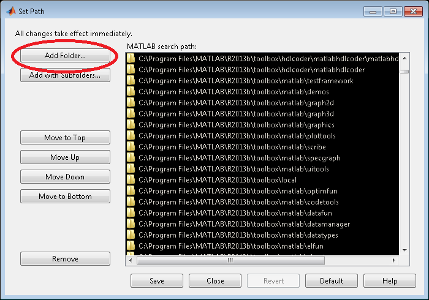

Getting Started
1. What is EasyPPI?
EasyPPI is a MATLAB toolbox which makes running and analyzing PROLITH lithography simulations easy. It is an object oriented wrapper for the ActiveX PROLITH Programming Interface (PPI).
2. Installation
For MATLAB versions newer than R2014a, EasyPPI can be installed as a MATLAB toolbox via the file EasyPPI.mltbx. For earlier versions, all that is needed to install EasyPPI is to place the directory containing the EasyPPI source files on the MATLAB path. This can be accomplished by clicking on Set Path in the Environment section of the Home tab.
On the Set Path dialog box, click on the Add Folder button and select the directory containing EasyPPI. Finally, click on the Save button to close the dialog box and save the path for future sessions.

3. Running a single simulation
There are four steps to running a single simulation with EasyPPI:
- Open connection to PROLITH
- Set simulation inputs, final step, and outputs
- Run the simulation and get data
- Close the connection to PROLITH
The following example code runs an aerial image simulation with a focus offset of 0.1 microns. The average NILS and aerial image intensity are returned as outputs.
PPI = PROLITH();
PPI.focus = 0.1;
PPI.final_step = 'aerial image';
PPI.add_output(PPI.aerial_image.intensity);
PPI.add_output(PPI.aerial_image.nils.avg);
PPI = PPI.run();
intensity = PPI.get_data('Y', PPI.aerial_image.intensity);
NILS = PPI.get_data('Y', PPI.aerial_image.nils.avg);
PPI = PPI.close();
4. Running a simulation set
The steps to run a simulation set are very similar to those to run a single simulation.
- Open connection to PROLITH
- Set simulation inputs parameters and outputs
- Run the simulation and get data
- Close the connection to PROLITH
Valid input parameters are listed here, while valid output parameters are listed here.
The following example code runs an aerial image simulation set with focus starting at -0.5 microns, ending at +0.5 microns, with a step size of 0.1 microns. The average NILS and aerial image intensity are returned as outputs.
PPI = PROLITH();
PPI = PPI.open();
focus = -0.5:0.1:0.5;
PPI.add_set_input(PPI.focus, [focus(1) focus(end) focus(2)-focus(1)]);
PPI.add_output(PPI.aerial_image.intensity);
PPI.add_output(PPI.aerial_image.nils.avg);
PPI = PPI.run();
intensity = PPI.get_data('Y', PPI.aerial_image.intensity);
NILS = PPI.get_data('Y', PPI.aerial_image.nils.avg);
PPI = PPI.close();
profile_x = intensity{1}(1,:);
I = zeros(numel(intensity), numel(profile_x));
for i=1:numel(intensity)
I(i, 1:numel(profile_x)) = intensity{i}(2,:);
end